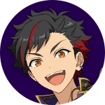
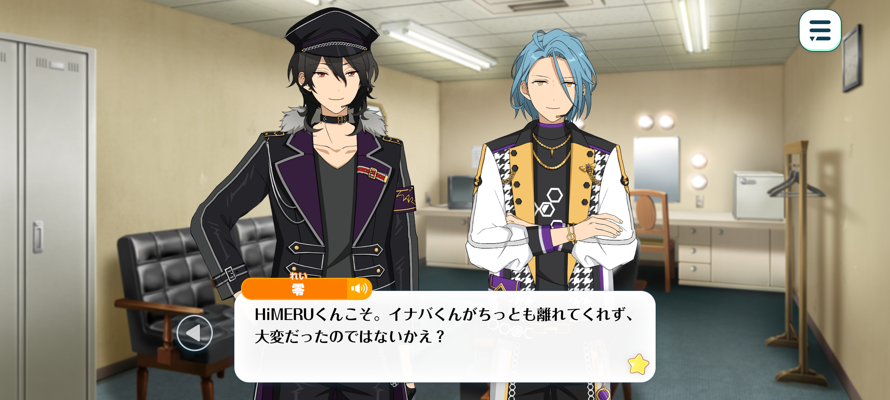
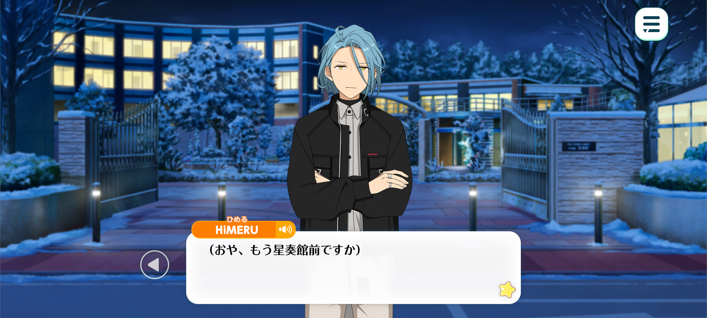
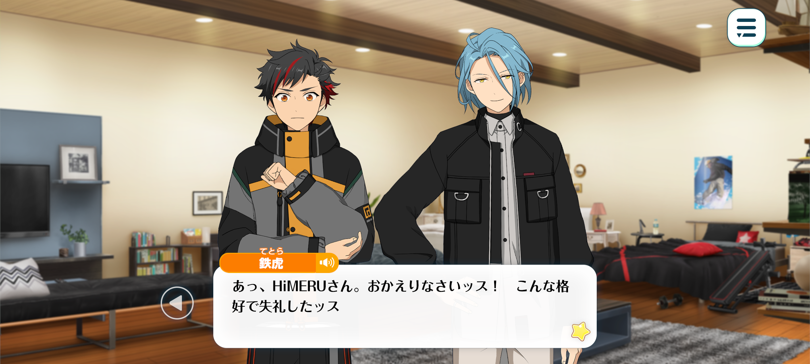

Scout! LUCKY SCRAMBLE
Fortunate Heartthrob – Chapter 2



Time: After the recording

HiMERU: Good work today, Sakuma-senpai.
Rei: Likewise, HiMERU-kun. Though I imagine Inaba-kun must have been quite reluctant to part with you, hm?
HiMERU: Yes, well... HiMERU certainly didn't expect him to become so attached.
Even his owner was completely taken aback. They kept insisting that "good fortune would most certainly come of this!"
Rei: They certainly did... Does Inaba-kun truly possess such remarkable powers?
After the recording wrapped up, Inaba-kun seemed rather reluctant to leave your side, HiMERU-kun. But when I tried approaching him...
It would seem he regarded me as nothing more than a threat.
How terribly sad. And here I thought rabbits had taken quite a liking to me on more than one occasion.
HiMERU: Well, when you put it that way, perhaps HiMERU simply happened to be Inaba-san's type.
...Still, it seems rather strange to determine whether someone will have good or bad luck based solely on a rabbit's preferences and behaviour.
Rei: Quite so. I still find myself pondering the owner's words... That "just because Inaba-kun takes a dislike to someone, it doesn't necessarily mean misfortune is in store for them."
Well, there's little point in dwelling on it. And should misfortune come knocking at my door, HiMERU-kun can simply suck it out from me and even things out with that good fortune of his.
HiMERU: —Though HiMERU rather doubts that any good fortune will actually come from this.
Rei: Oh? Have you lost faith in Inaba-kun's fortune-telling already?
HiMERU: One shouldn't place such faith in it. After all, there's no evidence or proof that such a phenomenon actually exists.
...Well then, HiMERU shall take his leave.
Rei: Of course. I shall be taking my leave as well. Take care on your way home...♪

HiMERU: (Oya, HiMERU is already in front of the dorms?)
(It usually takes around ten minutes to get from the television station to the dorms...)
(Now that HiMERU thinks about it, there wasn't a single traffic light that stopped him along the way. HiMERU was able to come straight home without having to wait for a single light to change, even at the three-way and five-way junctions.)
(It was green lights all the way home. How fortunate.)
…”Fortunate”?
—No, goodness, of course not. It was simply a coincidence.
HiMERU actually used a rather humorous expression just now. How unusual. That doesn't happen very often.

Tetora: Uuuugh... Gahhh...?
HiMERU: —HiMERU's home.
Tetora: Ah, HiMERU-san! Welcome back! Sorry you have to see me like this.
HiMERU: It's quite alright. We may share this room, but it's yours too. You're perfectly entitled to relax in it.
Tetora: N-no, I can't just laze around on my bed in front of my senpai! I gotta sit up straight and... There! Much better!
HiMERU: Fufu. You really do make an effort to lead a disciplined life. Nagumo is admirable.
Anyway, you seem to be glaring rather intently at your smartphone. Has something happened?
Tetora: Ah, well... It's kinda embarrassing, actually.
So, there's this game I'm playing, and there's this character I reeeally wanna get! He's, like...
HiMERU: Oya? It seems this character bears a resemblance to someone.
Tetora: That's right! He looks just like Taishou, the person I respect more than anyone else in the whole world!
That's why I really, really want him, but... I'm worried I'll end up spending too much of my pocket money this month.
HiMERU: HiMERU thinks it's commendable that you've developed enough self-discipline to keep your spending in check.
Tetora: But I want him so bad! I wanna add Taishou to my partyyy!
HiMERU: —HiMERU doesn't entirely understand how this game works, but... If you want this character so badly, why not simply get him?
Do you have to spend money to obtain him?
Tetora: ...No, there are some tickets I can use. But I've pretty much used up all the ones I've been saving...
I've only got one last ten-pull left! And somehow, I just have this feeling that 'cos I want him so badly, I’m not gonna get him~!
...So, HiMERU-san!
HiMERU: Yes?
Tetora: Please could you use all of my tickets for me?!
HiMERU: ? You want HiMERU to pull for you?
Tetora: That's right! I promise I won't complain, no matter what happens, so please...!
HiMERU: —Very well. HiMERU doesn't think the result will be any different, but... If you insist, HiMERU will do it.
…(Watching at the phone screen.)
Tetora: Hngh? Isn't it taking a while to load...?
Ah, there it goes—... EEEEEH!? What the heck is this!? I've never seen so many rainbow-coloured lights before!
HiMERU: It does appear that approximately eighty percent of the screen is covered in rainbows.
Tetora: Now all that's left is to see which characters I got and—
Wa, AAAAAA! IT’S HIM, HiMERU-SAN, IT’S HIM! IT’S TAISHOU~!
HiMERU: ...Well, well. Congratulations, Nagumo. You've managed to obtain the character you wanted.
Tetora: What're you saying?! It's all thanks to you, HiMERU-san!
I got so many of the other characters I wanted, too...! I seriously can't believe it!
Even if I thanked you a billion times, it still wouldn't be enough! HiMERU-san, thank you SO, SO much!
HiMERU: No, it was simply a coincidence. The character just happened not to appear until you started using those tickets.
Tetora: Really~? I can't believe it was anything other than HiMERU-san's incredible luck!
Thank you, HiMERU-san's luck...♪
HiMERU: —...
("Luck" again, hm...?)
Tetora: ? Is something wrong?
HiMERU: ...No, it's nothing. HiMERU has simply been hearing the word "luck" rather frequently today.
Actually, earlier today, while recording a certain program—